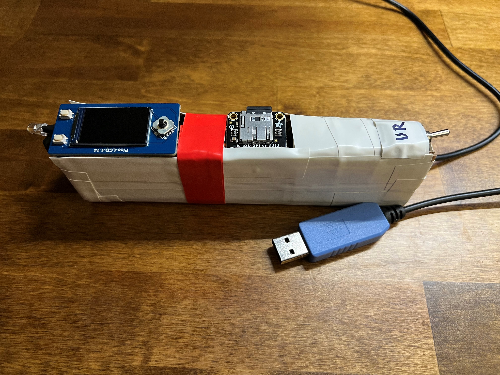
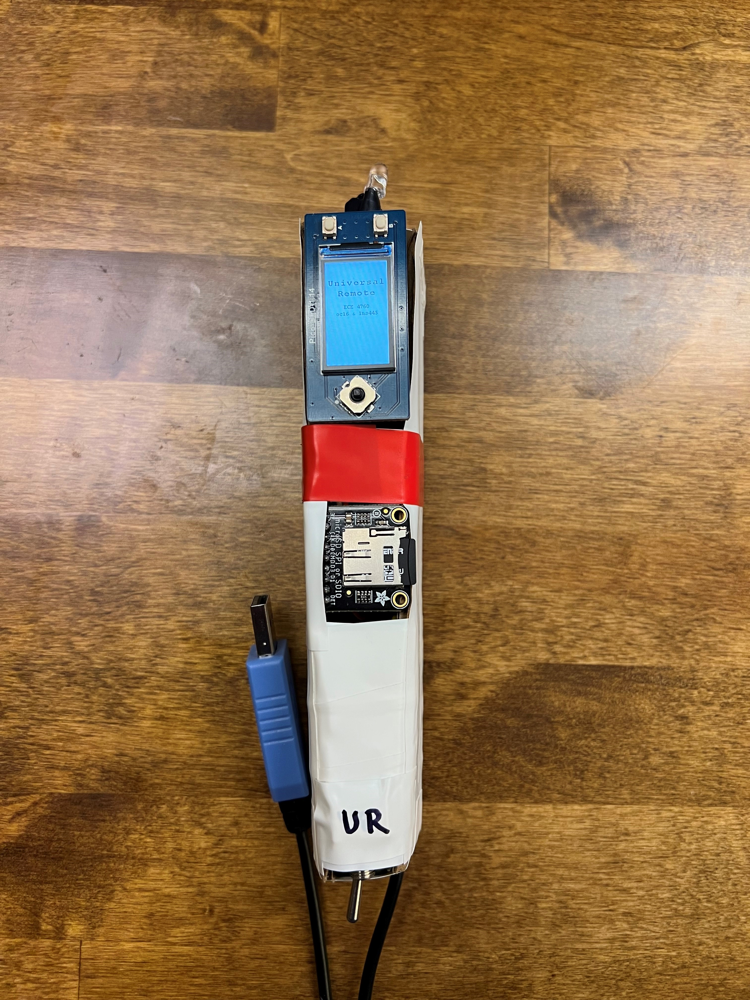

Our project is a universal infrared remote that can record, store, and rebroadcast any infrared signal.

Everyone is familiar with the classic coffee table chaos of half a dozen TV remotes that each accomplish a very specific and unique function, but no one knows which one does what. Our project is the solution to that problem. We have designed an infrared remote that can store up to ten remotes with eight buttons per remote, and the remote can be programmed with any infrared communication protocol. To program the remote, you simply turn it on and plug the USB cable into your computer and activate the serial interface. The interface will prompt you to name the remote and button that you want to add, and then you will be prompted to record your remote’s infrared signal by pointing your remote at the front of our Universal Infrared Remote and pressing the desired button. Once you have recorded the remotes and buttons that you want, you can unplug the USB cable from your computer. All the devices and remotes will be saved locally on the SD card, so your data will persist through power cycles. If you want to delete any remotes or buttons, you may due so through the serial interface.
We have often found that class projects are discarded after the completion of the course, but we wanted something that we would be able to use in our everyday lives. The most crucial feature of this remote that allows it to be legitimately useful is the non-volatile memory of the SD card. This allows the user to have the unpowered remote sitting on their coffee table, and when they power it on, all of their buttons and remotes are still there, ready to be used. Our project was a resounding success despite many hiccups along the way, and we are very proud of our demonstration.

Click through the other pages of this website to read more about our project, its design, and our process.